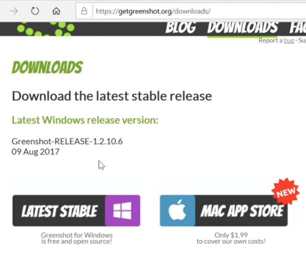

GreenShot for screenshoting
It has these functionality usful
1. You can invert color to make things look good
2. You can add frame to your pics
3. You can highlight things
4. You can obfuscate things.
5. You can copy/paste the stuff.
6. You can save something.